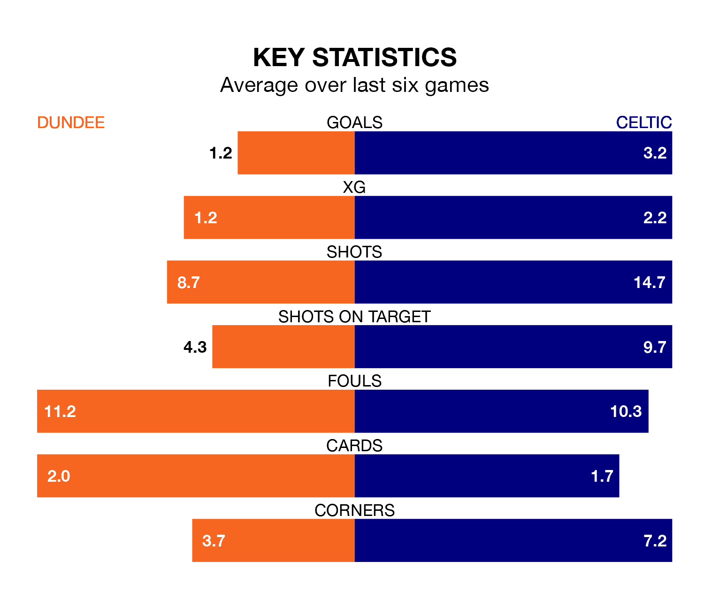

Celtic are strong favourites to take all three points despite Dundee's home advantage in Sunday's match at the Scot Foam Stadium at Dens Park.
*Betting Company* are offering odds of 1.25 on Celtic sealing the win, with the visitors sitting first in the Premiership table.
Dundee, who are sixth in the league and 37 points behind the Bhoys, are priced at 7.7 to win. A draw is set at 5.6.
With 80 goals in 33 games so far this season, Celtic are the league's highest scorers with 2.4 goals per game. And they are conceding fewer than average, letting in 26 goals at a rate of 0.8 per game.
Dundee, meanwhile, are average scorers, with 1.3 goals per game. They have conceded 1.6 goals per game.
In the last 10 years, Dundee and Celtic have played each other on 23 occasions. Celtic won 19 of them and they drew four times.
On average, the Dees scored 0.4 goals and the Bhoys 2.7 in those matches.
Their last meeting was on February 28, when Celtic won 7-1 at home.
In Joe Hart, the Bhoys can rely on one of the league's safest pair of hands. He has kept 13 clean sheets in his 32 appearances this season, and only two other 'keepers – Rangers's Jack Butland and Hearts's Zander Clark – have been able to prevent the opposition scoring on more occasions in the Premiership.
In the Dees's net, Trevor Carson has eight clean sheets in 25 games. He has conceded a goal every 56 minutes, more than twice as often as the 134 minutes between goals for Hart.
The hosts are in mixed form in the Premiership, with two wins and three draws from their last six games.
With four wins and a draw over that period, the away team's form is better – they have taken 13 points from 18, compared to Dundee's nine.
Dundee's last match was on April 17, a 0-0 draw against Rangers.
Celtic beat St. Mirren 3-0 last time out, on April 13, with Adam Uche Idah, Kyogo Furuhashi and Reo Hatate on the scoresheet.
Updated: 07:59 (UTC), 26/04/24